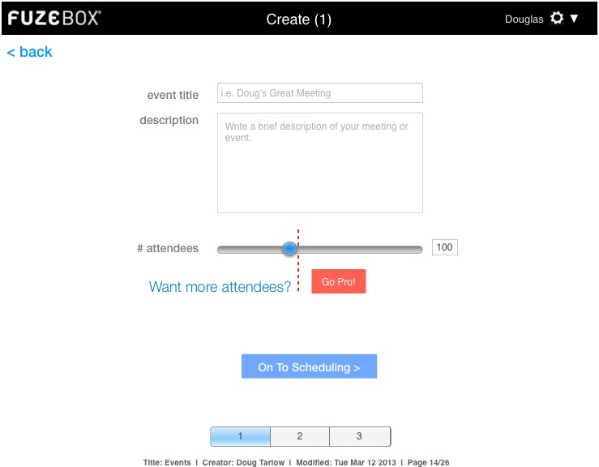

<map name="GraffleExport">
	<area shape=rect coords="384,332,451,362" href="gopro.html">
	<area shape=rect coords="184,342,454,364" href="gopro.html">
	<area shape=rect coords="3,51,70,74" href="loggedin_dash.html">
	<area shape=rect coords="298,436,465,466" href="create2.html">
</map>

